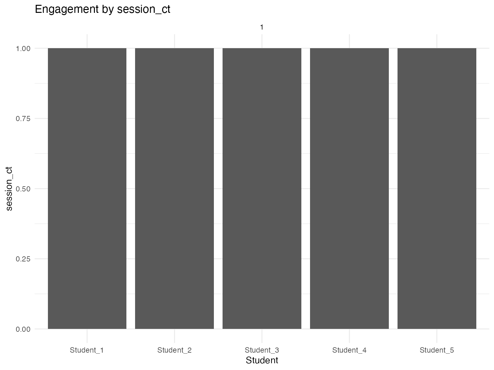
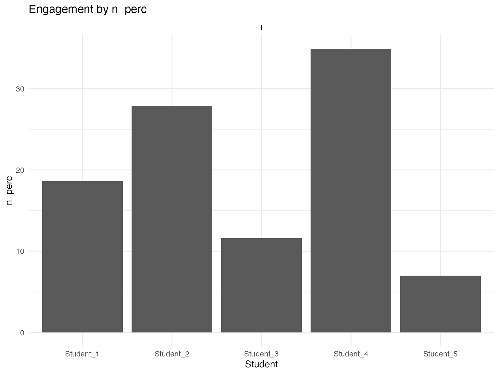
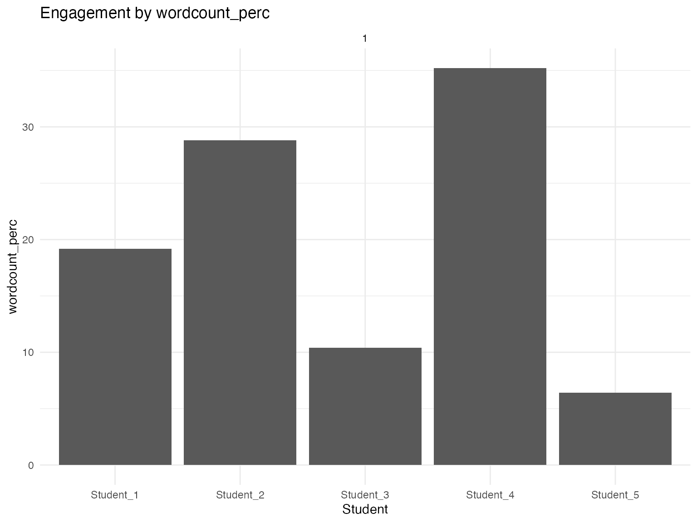
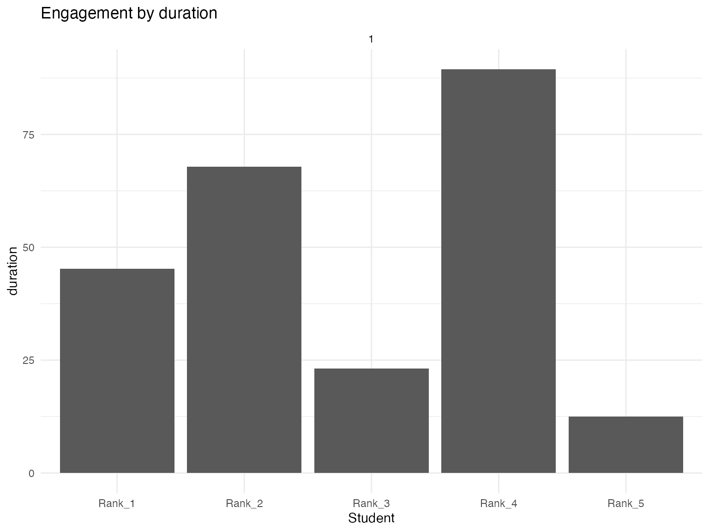
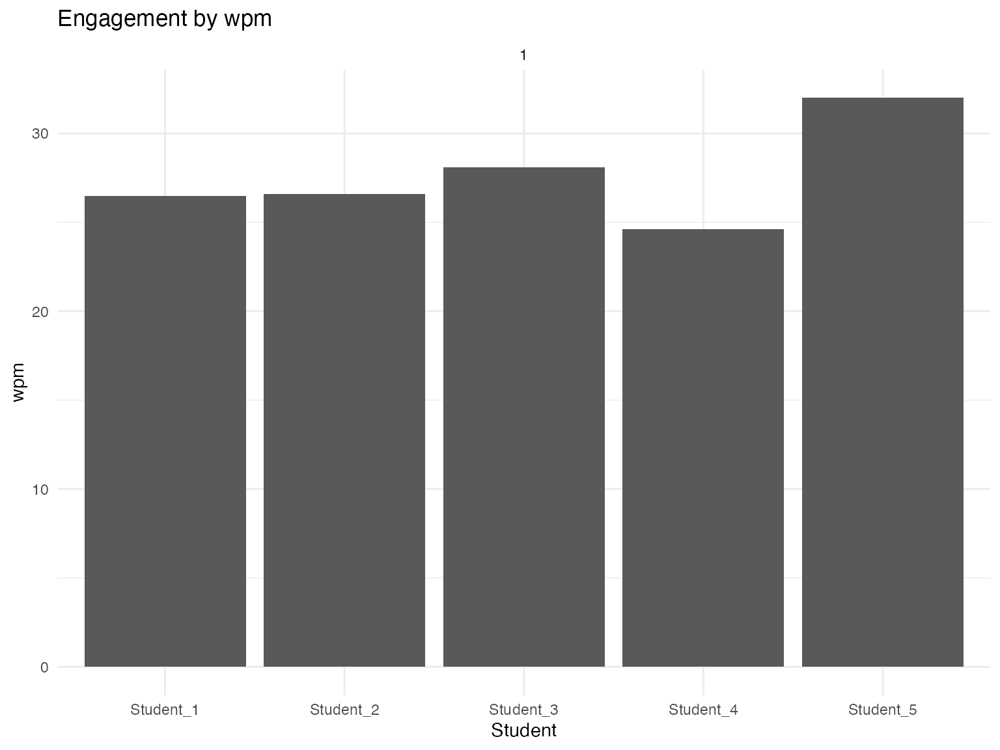
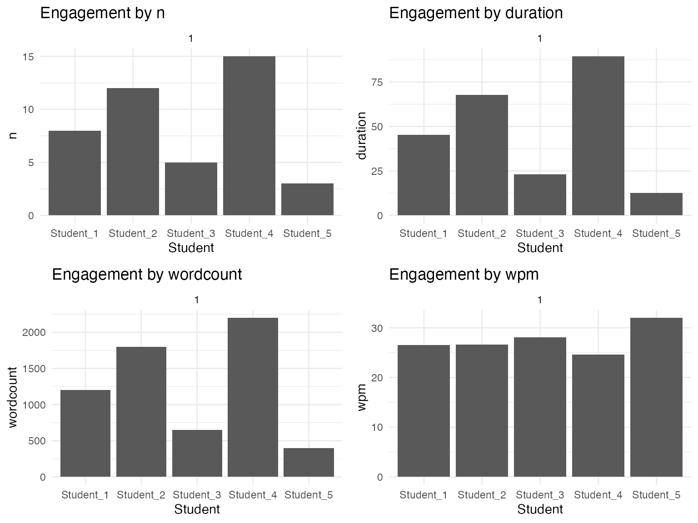
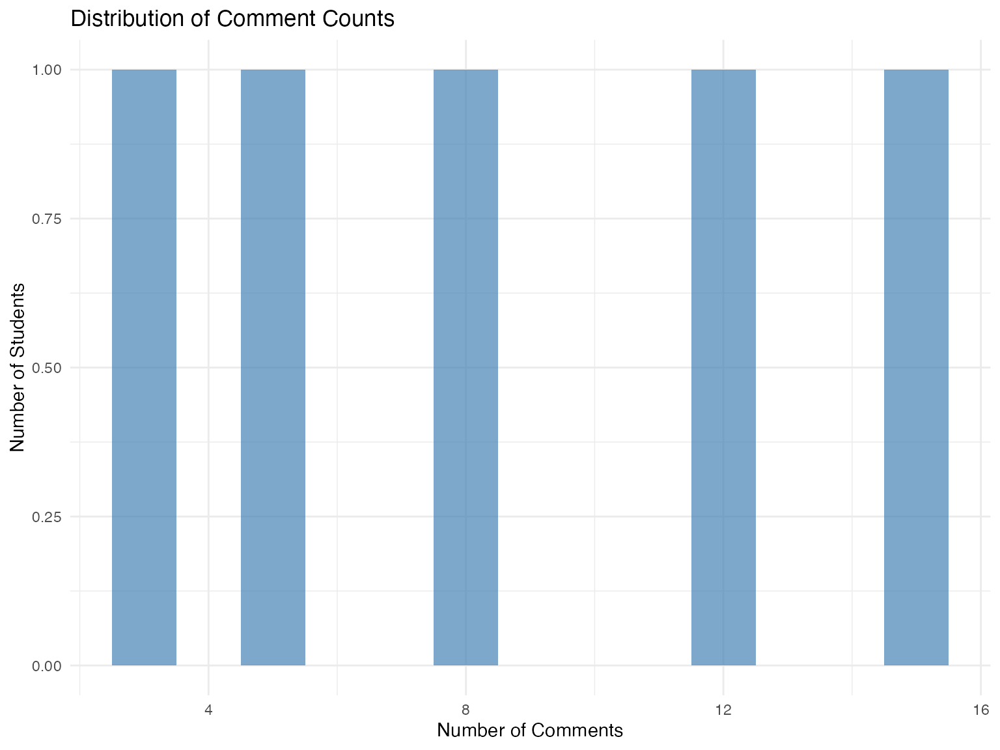
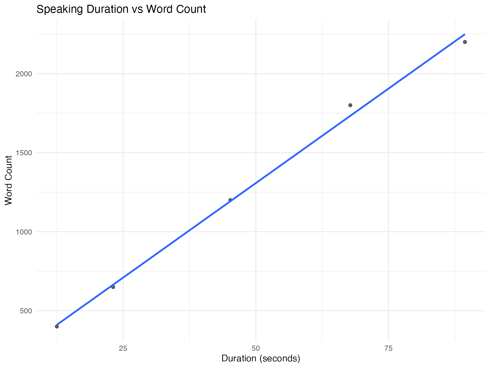

Plotting and Analysis with engager
engager package
2025-09-21
Source:vignettes/plotting.Rmd
plotting.Rmd
library(engager)
#> Welcome to engager!
#> - Start with: vignette('getting-started', package='engager')
#> - Core functions: vignette('essential-functions', package='engager')
#> - Sample data: system.file('extdata/transcripts', package='engager')
#> - Quick example: example(summarize_transcript_metrics)
#>
#> To suppress this message: options(engager.show_startup = FALSE)
library(dplyr)
#>
#> Attaching package: 'dplyr'
#> The following objects are masked from 'package:stats':
#>
#> filter, lag
#> The following objects are masked from 'package:base':
#>
#> intersect, setdiff, setequal, union
library(ggplot2)Plotting and Analysis
This vignette shows how to create visualizations and analyze student
engagement patterns using the engager package.
Preparing Data for Analysis
Loading Sample Data
First, let’s prepare some sample data for analysis:
# Create sample data for demonstration
# In practice, you would load actual transcript and roster data
# Sample transcript metrics
transcripts_metrics_df <- tibble::tibble(
name = c("Alice Johnson", "Bob Smith", "Carol Davis", "David Wilson", "Eva Brown"),
n = c(8, 12, 5, 15, 3),
duration = c(45.2, 67.8, 23.1, 89.4, 12.5),
wordcount = c(1200, 1800, 650, 2200, 400),
comments = list("Good point", "Interesting question", "I agree", "Follow-up question", "Brief comment"),
n_perc = c(18.6, 27.9, 11.6, 34.9, 7.0),
duration_perc = c(19.2, 28.8, 9.8, 38.0, 5.3),
wordcount_perc = c(19.2, 28.8, 10.4, 35.2, 6.4),
wpm = c(26.5, 26.6, 28.1, 24.6, 32.0),
course_section = "LTF.201.1",
course = 201,
section = 1,
day = "Thursday",
time = "18:30",
name_raw = name,
start_time_local = as.POSIXct("2024-01-24 18:30:00", tz = "America/Los_Angeles"),
dept = "LTF",
session_num = 1
)
# Sample roster sessions
roster_sessions <- tibble::tibble(
student_id = c("12345", "12346", "12347", "12348", "12349"),
first_last = c("Alice Johnson", "Bob Smith", "Carol Davis", "David Wilson", "Eva Brown"),
preferred_name = c("Alice", "Bob", "Carol", "David", "Eva"),
dept = "LTF",
course = 201,
section = 1,
session_num = 1,
start_time_local = as.POSIXct("2024-01-24 18:30:00", tz = "America/Los_Angeles"),
course_section = "LTF.201.1"
)
# For this example, we'll work directly with the sample data
# In practice, you would use the essential functions to process real data
# Create a simplified summary dataframe for demonstration
transcripts_summary_df <- transcripts_metrics_df %>%
group_by(name) %>%
summarise(
session_ct = n(),
n = sum(n),
duration = sum(duration),
wordcount = sum(wordcount),
n_perc = mean(n_perc),
duration_perc = mean(duration_perc),
wordcount_perc = mean(wordcount_perc),
wpm = mean(wpm),
section = first(section),
course = first(course)
)
# View the summary data
head(transcripts_summary_df)
#> # A tibble: 5 × 11
#> name session_ct n duration wordcount n_perc duration_perc wordcount_perc
#> <chr> <int> <dbl> <dbl> <dbl> <dbl> <dbl> <dbl>
#> 1 Alice… 1 8 45.2 1200 18.6 19.2 19.2
#> 2 Bob S… 1 12 67.8 1800 27.9 28.8 28.8
#> 3 Carol… 1 5 23.1 650 11.6 9.8 10.4
#> 4 David… 1 15 89.4 2200 34.9 38 35.2
#> 5 Eva B… 1 3 12.5 400 7 5.3 6.4
#> # ℹ 3 more variables: wpm <dbl>, section <dbl>, course <dbl>Basic Visualization
Plotting by Metric
Use the unified plot_users() function to create
visualizations for different engagement metrics. The default output is a
bar chart with a minimal theme for improved readability:
# Plot session count
plot_users(transcripts_summary_df, metric = "session_ct", facet_by = "section", mask_by = "name")
# Plot comment count
plot_users(transcripts_summary_df, metric = "n", facet_by = "section", mask_by = "name")
# Plot speaking duration
plot_users(transcripts_summary_df, metric = "duration", facet_by = "section", mask_by = "name")
# Plot word count
plot_users(transcripts_summary_df, metric = "wordcount", facet_by = "section", mask_by = "name")Understanding the Metrics
Available Metrics
The package provides several engagement metrics:
- session_ct: Number of sessions attended
- n: Number of comments made
- n_perc: Percentage of total comments
- duration: Total speaking time (seconds)
- duration_perc: Percentage of total speaking time
- wordcount: Total words spoken
- wordcount_perc: Percentage of total words
- wpm: Words per minute
Percentage Metrics
Visualize relative participation:
# Plot percentage of comments
plot_users(transcripts_summary_df, metric = "n_perc", facet_by = "section", mask_by = "name")
# Plot percentage of speaking time
plot_users(transcripts_summary_df, metric = "duration_perc", facet_by = "section", mask_by = "name")
# Plot percentage of words
plot_users(transcripts_summary_df, metric = "wordcount_perc", facet_by = "section", mask_by = "name")
Students-Only Analysis
Filtering for Enrolled Students
Focus analysis on enrolled students only:
# Filter for students only (exclude instructors, TAs, etc.)
# In practice, you would use roster data to identify students
students_only_summary <- transcripts_summary_df %>%
filter(!grepl("Instructor|TA|Professor", name, ignore.case = TRUE))
# Plot students-only metrics
plot_users(students_only_summary, metric = "session_ct", facet_by = "section", mask_by = "name")
Masked Names for Privacy
Use rank-based masked labels for privacy-conscious analysis:
# Plot with rank-masked names
plot_users(
data = students_only_summary,
metric = "n",
facet_by = "section",
mask_by = "rank"
)
plot_users(
data = students_only_summary,
metric = "duration",
facet_by = "section",
mask_by = "rank"
)
Advanced Analysis
Custom Filtering
Filter data for specific analysis:
# Filter for specific sections
section_data <- transcripts_summary_df %>%
filter(section == 1) # Use the actual section number from our sample data
# Plot filtered data
plot_users(section_data, metric = "wpm", facet_by = "section", mask_by = "name")
Comparative Analysis
Compare different metrics:
# Create comparison plots using grid layout
library(gridExtra)
#>
#> Attaching package: 'gridExtra'
#> The following object is masked from 'package:dplyr':
#>
#> combine
# Create individual plots
p1 <- plot_users(transcripts_summary_df, metric = "n", facet_by = "section", mask_by = "name")
p2 <- plot_users(transcripts_summary_df, metric = "duration", facet_by = "section", mask_by = "name")
p3 <- plot_users(transcripts_summary_df, metric = "wordcount", facet_by = "section", mask_by = "name")
p4 <- plot_users(transcripts_summary_df, metric = "wpm", facet_by = "section", mask_by = "name")
# Arrange plots in a grid
grid.arrange(p1, p2, p3, p4, ncol = 2)
Interpreting the Results
Participation Equity
Look for patterns in participation:
# Analyze participation distribution
participation_summary <- transcripts_summary_df %>%
group_by(section) %>%
summarise(
total_students = n(),
active_students = sum(n > 0),
avg_comments = mean(n),
median_comments = median(n),
participation_rate = active_students / total_students
)
participation_summary
#> # A tibble: 1 × 6
#> section total_students active_students avg_comments median_comments
#> <dbl> <int> <int> <dbl> <dbl>
#> 1 1 5 5 8.6 8
#> # ℹ 1 more variable: participation_rate <dbl>Custom Visualizations
Creating Your Own Plots
Use the data to create custom visualizations:
# Custom participation distribution
ggplot(transcripts_summary_df, aes(x = n)) +
geom_histogram(binwidth = 1, fill = "steelblue", alpha = 0.7) +
labs(
title = "Distribution of Comment Counts",
x = "Number of Comments",
y = "Number of Students"
) +
theme_minimal()
# Custom duration vs word count
ggplot(transcripts_summary_df, aes(x = duration, y = wordcount)) +
geom_point(alpha = 0.6) +
geom_smooth(method = "lm", se = FALSE) +
labs(
title = "Speaking Duration vs Word Count",
x = "Duration (seconds)",
y = "Word Count"
) +
theme_minimal()
#> `geom_smooth()` using formula = 'y ~ x'
Best Practices
Choosing the Right Metric
-
For attendance: Use
session_ct -
For participation frequency: Use
norn_perc -
For speaking time: Use
durationorduration_perc -
For content contribution: Use
wordcountorwordcount_perc -
For speaking pace: Use
wpm
Next Steps
- For session mapping: See the Session Mapping vignette
- For student reports: See the Student Reports vignette
- For troubleshooting: See the Troubleshooting Guide vignette